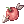

Shows the item thumbnail and item name that links to the NovaRO Market database.
If thumbnail is missing, try Template:Item List2.
For showing items without a thumbnail, use Template:Item (links to item overview) or Template:Market (links to live market data).
For cards, use Template:Card
(Note: This page no longer links to Divine Pride. Huge thanks and credit to the iROwiki guys! AND THANKS TOKEI.)
Syntax
{{Item List|id=|item=|num=|slots=|evt=|gc=|prefix=|suffix=|link=|alt=}}
- Parameters
- id
- The unique id of the item.
- item
- The name of the item.
- num
- (Optional) The quantity of items.
- slots
- (Optional) The number of slots of the item has it.
- evt
- (Optional) If the item is a version exclusive to Endeavor Tokens and the user wants to add the tag to the item. Use
evt=yesfor that. - gc
- (Optional) If the item is a version exclusive to Gold Coins and the user wants to add the tag to the item. Use
gc=yesfor that. - prefix
- (Optional) Prefix (e.g. card prefixes) added in front of the item name (after num).
- suffix
- (Optional) Suffix (e.g. card suffixes) added behind the item name (before slots).
- link
- (Optional) Links to the price list section instead of the view section if equals to 1.
- alt
- (Optional) Retrieve the item thumbnail from an alternative database. Use
alt=yesfor that. When used, same as Template:Item List2.
Example
Using {{Item List|id=2285|item=Apple of Archer}} will result into  Apple of Archer
Using {{Item List|id=2285|item=Apple of Archer|num=5}} will result into 5 Apple of Archer
Using {{Item List|id=2285|item=Apple of Archer|slots=2}} will result into Apple of Archer [2]
Using {{Item List|id=2285|item=Apple of Archer|slots=2|link=1}} will result into Apple of Archer [2] that opens the selling tab
Using {{Item List|id=2285|item=Apple of Archer|evt=yes|slots=1}} will result into Apple of Archer [EVT] [1]
Using {{Item List|id=2285|item=Apple of Archer|gc=yes|slots=1}} will result into Apple of Archer [GC] [1]
Using {{Item List|id=2285|item=Apple of Archer|gc=yes|slots=2|prefix=Cursed|suffix=of WTF}} will result into Cursed Apple of Archer [GC] of WTF [2]